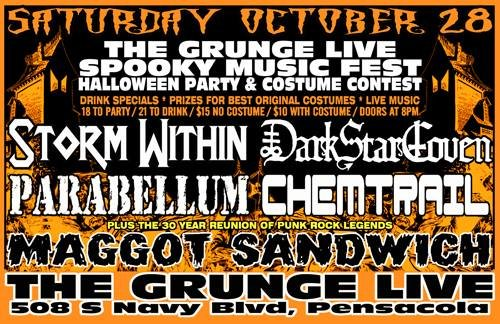

SAT OCT 28from the archive
Storm Within, Dark Star Coven, Parabellum, Chemtrail, Maggot Sandwich
doors 8pm
$15 no costume / $10 with costume
The Grunge Live Spooky Music Fest Halloween Party & Costume Contest. Storm Within (Power/Prog Metal), Dark Star Coven (Black Metal/Death Metal/Crust Punk), Parabellum (Swamp Metal/Doom Metal/Stoner Rock), Chemtrail (Hard Rock/Alternative/Grunge Rock), plus the 30 year reunion of punk rock legends Maggot Sandwich. 508 S Navy Blvd, Pensacola.